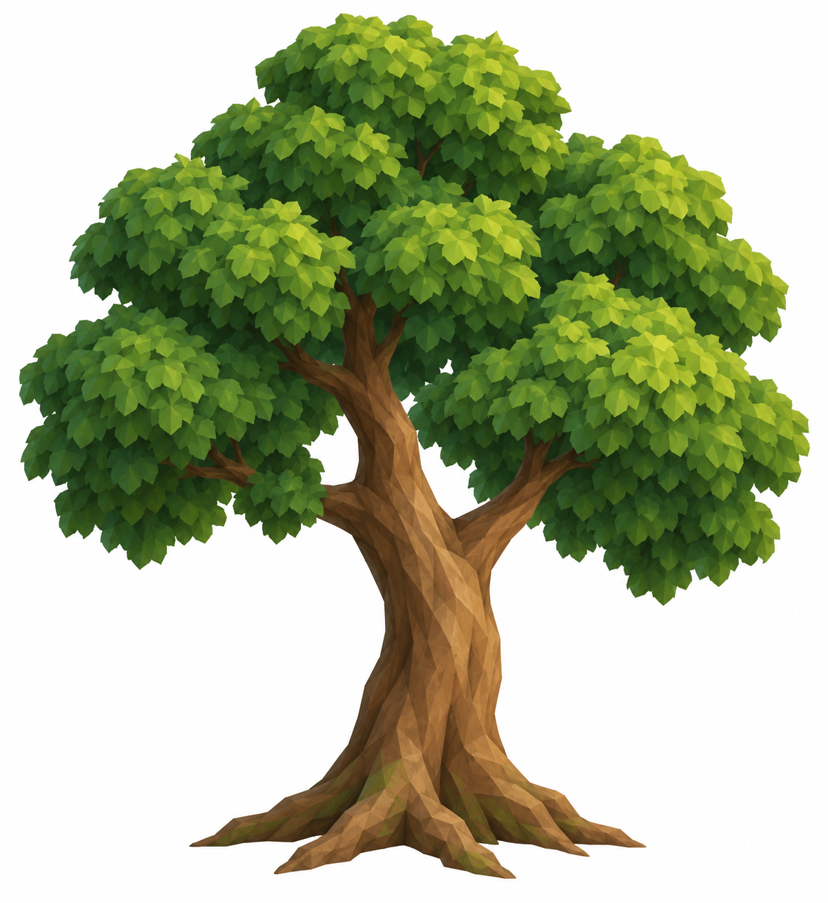

CONTINUOUS ROTATION · LOCAL CHECKPOINT · NO PUSH
Heartwood: a better placed edge, still an unfinished forest.
The retained second pass scores 3.6/10 HOLD. The log and opposing low plants now appear in the destination view. The floor remains too open and the selected broadleaf shelter is absent. A final feasibility check rejected another cosmetic pass within the protected resource clearances.
The ordinary outing works
Twelve reached stops, 191.0 seconds (3m11s), 305.4 metres, five berries gathered (17→22), and full health at Camp. The guided keyboard route used four walking detours. This is a scripted ordinary-control outing, not unaided human navigation.
Arrival and interior still need stronger rooms
What the asset study proved
The separate broadleaf reference passed its input review. The fresh-process TRELLIS helper recovered RAM between stages and completed numerical decoding, but produced 7,057,316 faces and correctly refused the unchanged 750,000-face export guard. No GLB or new tree was admitted. The target role remains on hold; the study is closed for this visit.

Generated broadleaf reference — no corresponding admitted model Trailgloam single-image reference — HOLD: leg count not established
Trailgloam single-image reference — HOLD: leg count not establishedCheckpoint proof and limits
1,417 tests pass; verify and ZIP pass. ZIP 20.60 MiB. Twenty forage/wildlife chunks and all 26 discovery records match the prior checkpoint. Existing source identities, canopy positions, Camp and other sampled habitats are preserved.
Initial native reload preserved inventory/ecology. Its exported feet were the existing three-second safe snapshot; pagehide refreshed them, producing a 5.623m Z difference. The actual reopened continuation is the separate portable fixture. Complete developer/portable results: portable-route: exact; developer-original: exact; portable-original: exact. No user browser save was touched.
Browser phone viewports are not physical-phone performance proof. This visit does not complete Heartwood or admit the tree/Trailgloam. The continuous goal advances to Skybreak planning and parallel manual Trailgloam anatomy work.
Try the route
- Leave Mossling Camp toward the northern woodland, keeping the central path open. Look for the existing pink-tipped plants at the threshold.
- Follow the west side of the territorial creature's area to the northern berry bush. Stop close with the hatchet ready and collect the berries; the pack count should rise.
- Return along the western berry pocket. The fallen log should appear to the left of the open approach, with low stones/plants opposite.
- Walk back to Camp, then close and reopen. Supplies and harvested sources should persist. Stuck movement, blocked berries, errors or restored depleted yields are failure signs.
Checkpoint receipt · Independent visual review · Final feasibility